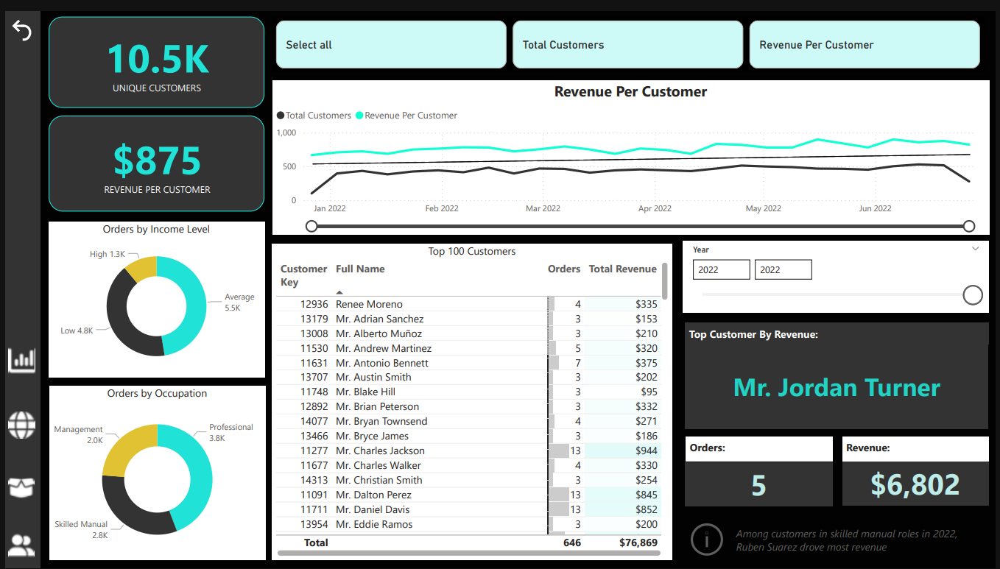
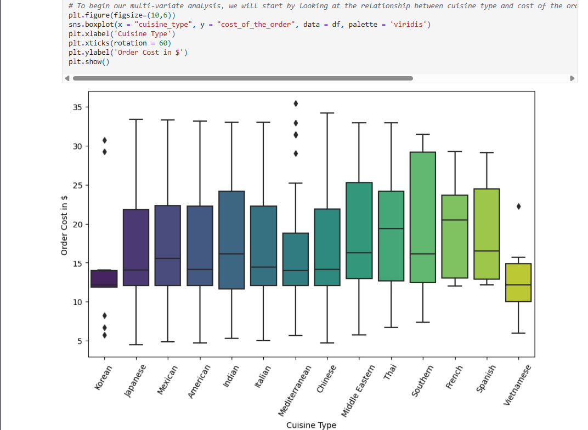
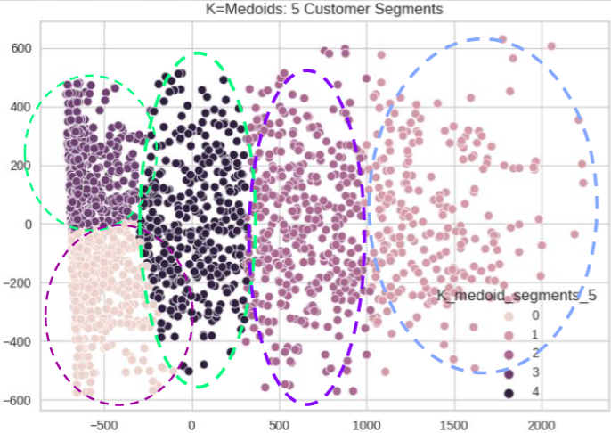

01

Adventure Works
Organized customer data into an interactive, visually appealing dashboard.
PowerBI
I am building a career in data science with a long-term goal of applying it to neurology. I aim to turn clinical and patient data into tools that help prevent and treat migraines, seizures, and other neurological conditions.

Organized customer data into an interactive, visually appealing dashboard.

Analyzed order data to profile the customer base and turn the findings into actionable recommendations.

Analyzed purchase trends, segmented the customer base, and built personas for each segment.
I have worked with data since 2020: converting and loading customer data for implementations, analyzing requirements as a business analyst, and writing SQL for a data services team. I lead Scrum teams alongside that work. My goal is a career as a Data Scientist focused on neurological health.